NCERT भूगोल (कक्षा 10) - अध्याय 7
राष्ट्रीय अर्थव्यवस्था की जीवन रेखाएं (Lifelines of National Economy)
भाग 1: परिवहन के साधन और सड़क परिवहन (Transport Modes & Roadways)
हम अपने दैनिक जीवन में विभिन्न सामग्रियों और सेवाओं का उपयोग करते हैं। इनमें से कुछ हमारे आसपास उपलब्ध होती हैं, जबकि अन्य आवश्यकताओं की पूर्ति सुदूर स्थानों से वस्तुओं को लाकर की जाती है। वस्तुओं और सेवाओं का यह आवागमन **परिवहन (Transport)** द्वारा संभव होता है। इसीलिए परिवहन, संचार और व्यापार को **'राष्ट्रीय अर्थव्यवस्था की जीवन रेखाएं' (Lifelines of National Economy)** कहा जाता है।
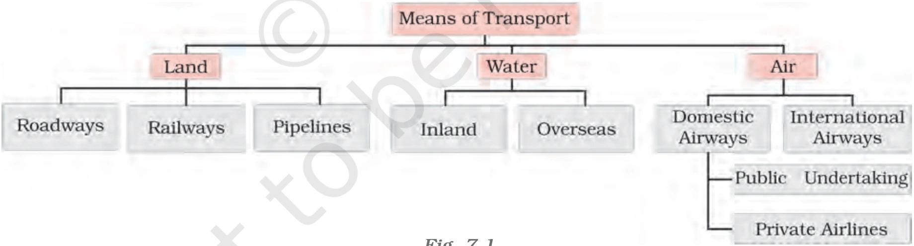
चित्र 7.1 (आधिकारिक NCERT हिंदी पाठ्यपुस्तक अध्याय 7): परिवहन के प्रमुख साधन (स्थल, जल और वायु)।
🔍 चित्र का विस्तृत विवरण & भौगोलिक संदर्भ:
• क्या दर्शाता है: स्थल (सड़क, रेल, पाइपलाइन), जल (आंतरिक व समुद्री), और वायु (घरेलू व अंतरराष्ट्रीय) परिवहन का संपूर्ण वर्गीकरण तंत्र।
• भौगोलिक महत्व: एक आधुनिक व सक्षम परिवहन जाल ही देश के आर्थिक विकास और राष्ट्रीय एकीकरण की पहली शर्त है।
1.1 भारत में सड़कों का जाल और सड़क परिवहन का महत्व:
भारत दुनिया का दूसरा सबसे बड़ा सड़क नेटवर्क वाला देश है (लगभग 62.16 लाख किमी)। भारत में सड़क परिवहन, रेल परिवहन की तुलना में अधिक सुविधाजनक और महत्वपूर्ण है। इसके मुख्य कारण निम्नलिखित हैं:
कम निर्माण लागत: सड़कों की निर्माण लागत रेल लाइनों की तुलना में बहुत कम होती है।
उबड़-खाबड़ और पहाड़ी भूभाग: सड़कें कठिन, ढलावदार और उबड़-खाबड़ पहाड़ियों (जैसे हिमालय) पर आसानी से बनाई जा सकती हैं जहाँ ट्रेन चलाना असंभव है।
द्वार से द्वार सेवा (Door-to-Door Service): सड़कें घर-घर तक सामान पहुँचाती हैं, जिससे घर-घर सामान लादने व उतारने की लागत बहुत घट जाती है।
कम दूरी व कम वस्तुओं के लिए किफायती: कम व्यक्तियों, कम दूरी और कम सामान के लिए सड़क परिवहन सबसे सस्ता व सुलभ माध्यम है।
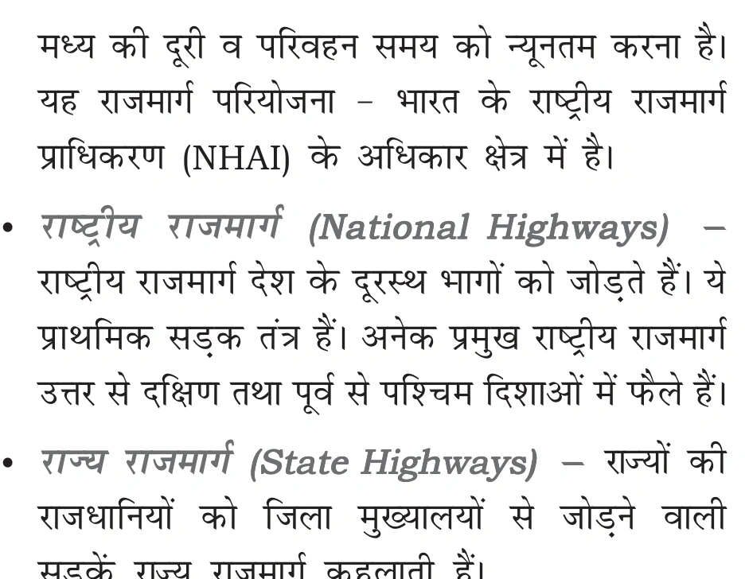
चित्र 7.2(a) (आधिकारिक NCERT हिंदी पाठ्यपुस्तक अध्याय 7): पहाड़ी क्षेत्रों में रज्जू मार्ग (Ropeway)।
🔍 चित्र का विस्तृत विवरण & भौगोलिक संदर्भ:
• क्या दर्शाता है: हिमालयी व दुर्गम पहाड़ी क्षेत्रों में तारों के सहारे चलने वाला केबल कार / **रज्जू मार्ग (Ropeway)**।
• भौगोलिक महत्व: जहाँ तीव्र ढलानों के कारण सड़क निर्माण कठिन होता है, वहाँ रज्जू मार्ग माल और यात्रियों के परिवहन का काम करता है।
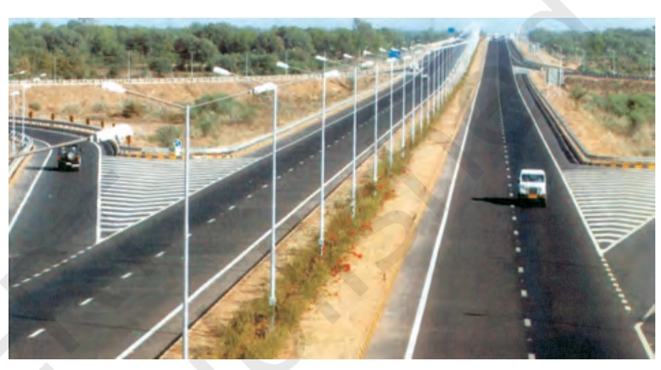
चित्र 7.2(b) (आधिकारिक NCERT हिंदी पाठ्यपुस्तक अध्याय 7): शहरी क्षेत्रों में यातायात संकुलन (Traffic Jam)।
🔍 चित्र का विस्तृत विवरण & भौगोलिक संदर्भ:
• क्या दर्शाता है: भारतीय शहरों की सड़कों पर वाहनों की भारी भीड़ और ट्रैफिक जाम की समस्या।
• भौगोलिक महत्व: यह बहु-लेन एक्सप्रेसवे, बाईपास और सार्वजनिक मेट्रो रेल की अनिवार्यता को दर्शाता है।
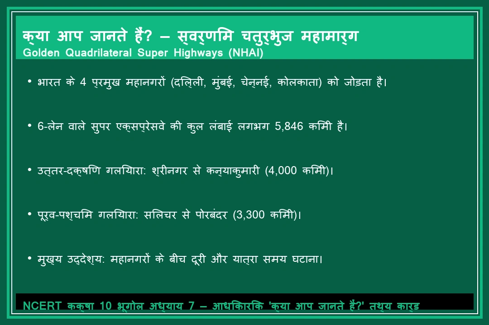
चित्र 1 (विशेष विषय चित्र): स्वर्णिम चतुर्भुज महामार्ग (Golden Quadrilateral Super Highway) - 6-लेन का एक्सप्रेसवे।
🔍 चित्र का विस्तृत विवरण & भौगोलिक संदर्भ:
• क्या दर्शाता है: भारत के 4 प्रमुख महानगरों (दिल्ली, मुंबई, चेन्नई, कोलकाता) को जोड़ने वाला 6-लेन का सुपर एक्सप्रेसवे।
• भौगोलिक महत्व: NHAI द्वारा संचालित यह राजमार्ग महानगरों के बीच दूरी और यात्रा समय को न्यूनतम करता है।
1.2 सड़कों का क्षमता के आधार पर वर्गीकरण:
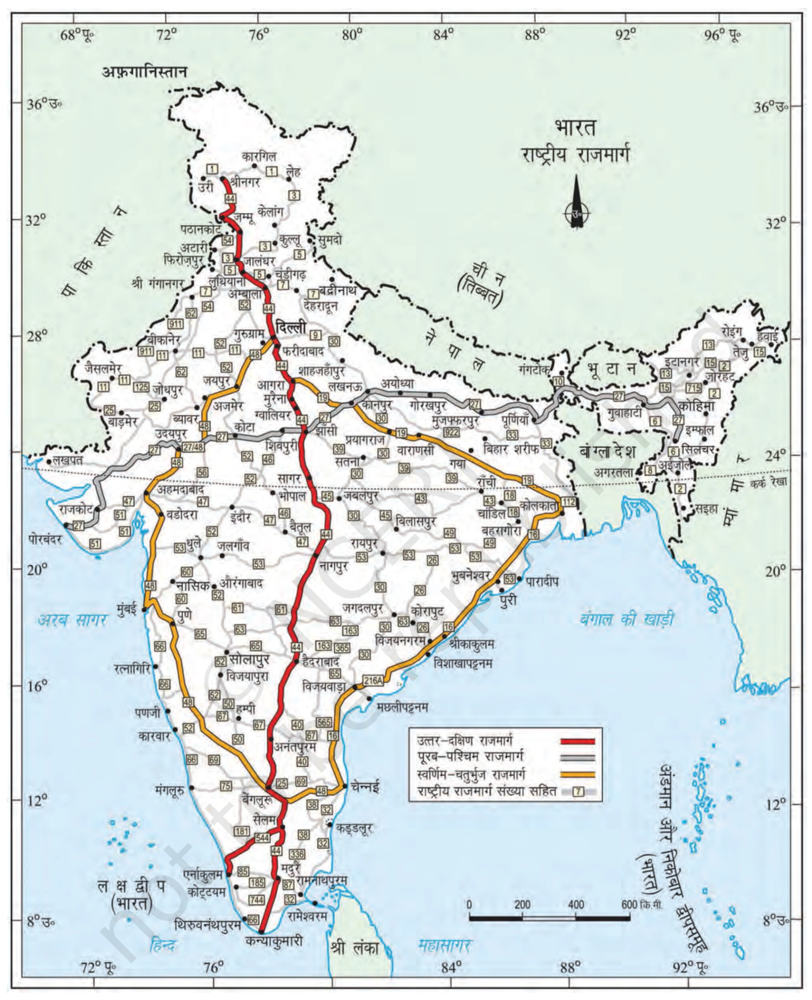
मानचित्र 7.1 (आधिकारिक NCERT हिंदी पाठ्यपुस्तक अध्याय 7): भारत के राष्ट्रीय राजमार्ग और स्वर्णिम चतुर्भुज गलियारा।
🔍 चित्र का विस्तृत विवरण & भौगोलिक संदर्भ:
• क्या दर्शाता है: उत्तर-दक्षिण (श्रीनगर-कन्याकुमारी) व पूर्व-पश्चिम (सिलचर-पोरबंदर) गलियारे का भारत के मानचित्र पर संजाल।
• भौगोलिक महत्व: राष्ट्रीय राजमार्ग देश के दूरस्थ भागों को आपस में जोड़ते हैं।
सड़क का प्रकार
नियंत्रक संस्था / प्राधिकरण
मुख्य कार्य एवं विशेषता
1. स्वर्णिम चतुर्भुज महामार्ग (Golden Quadrilateral)
NHAI (भारतीय राष्ट्रीय राजमार्ग प्राधिकरण)
दिल्ली-मुंबई-चेन्नई-कोलकाता को जोड़ने वाला 6-लेन का सुपर हाईवे। उत्तर-दक्षिण (श्रीनगर-कन्याकुमारी) व पूर्व-पश्चिम (सिलचर-पोरबंदर) गलियारा।
2. राष्ट्रीय राजमार्ग (National Highways)
CPWD (केंद्रीय लोक निर्माण विभाग)
देश के दूरस्थ भागों को जोड़ते हैं। प्राथमिक सड़क तंत्र। (उदा: शेरशाह सूरी मार्ग - NH 1 / अब NH 44)।
3. राज्य महामार्ग (State Highways)
PWD (राज्य लोक निर्माण विभाग)
राज्य की राजधानी को विभिन्न जिला मुख्यालयों से जोड़ते हैं।
4. जिला मार्ग (District Roads)
जिला परिषद (Zila Parishad)
जिला मुख्यालय को जिले के अन्य प्रशासनिक केंद्रों से जोड़ते हैं।
5. अन्य सड़कें (Rural Roads)
प्रधानमंत्री ग्रामीण सड़क योजना (PMGSY)
गांवों को मुख्य शहरों से जोड़ती हैं। इस योजना के तहत हर गांव को बारहमासी पक्की सड़क से जोड़ा जा रहा है।
6. सीमांत सड़कें (Border Roads)
BRO (सीमा सड़क संगठन - 1960)
उत्तर तथा उत्तर-पूर्वी सीमावर्ती क्षेत्रों में सड़कों का निर्माण व देखरेख। सामरिक महत्व की सड़कें।
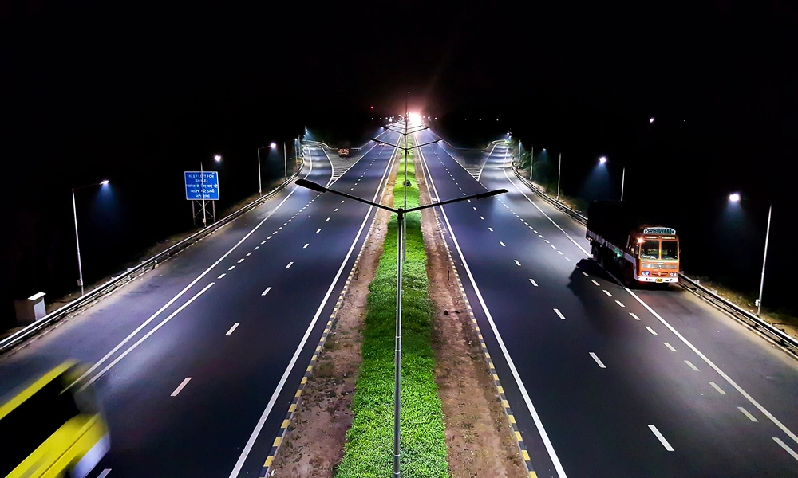
चित्र 7.3 (आधिकारिक NCERT हिंदी पाठ्यपुस्तक अध्याय 7): पक्की सड़क (Metalled Road) - कंक्रीट व तारकोल से निर्मित।
🔍 चित्र का विस्तृत विवरण & भौगोलिक संदर्भ:
• क्या दर्शाता है: सीमेंट, कंक्रीट व तारकोल (Bitumen) से बनी पक्की सड़क जो वर्षा ऋतु में भी सुचारू रहती है (बारहमासी सड़क)।
• भौगोलिक महत्व: भारी वाहनों और तीव्र गति परिवहन हेतु अनिवार्य।
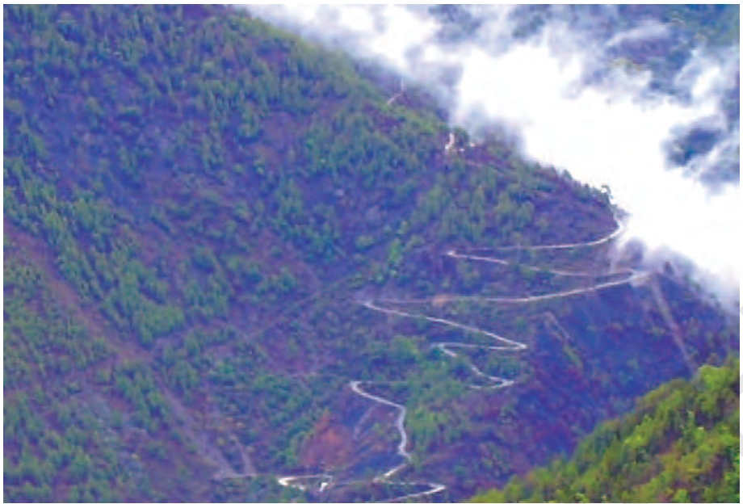
चित्र 7.4 (आधिकारिक NCERT हिंदी पाठ्यपुस्तक अध्याय 7): कच्ची सड़क (Unmetalled Road) - मिट्टी व बजरी से निर्मित।
🔍 चित्र का विस्तृत विवरण & भौगोलिक संदर्भ:
• क्या दर्शाता है: मिट्टी से बनी ग्रामीण कच्ची सड़क जो वर्षा ऋतु में कीचड़युक्त हो जाती है।
• भौगोलिक महत्व: PMGSY द्वारा ऐसी सड़कों को पक्की सड़कों में बदला जा रहा है।
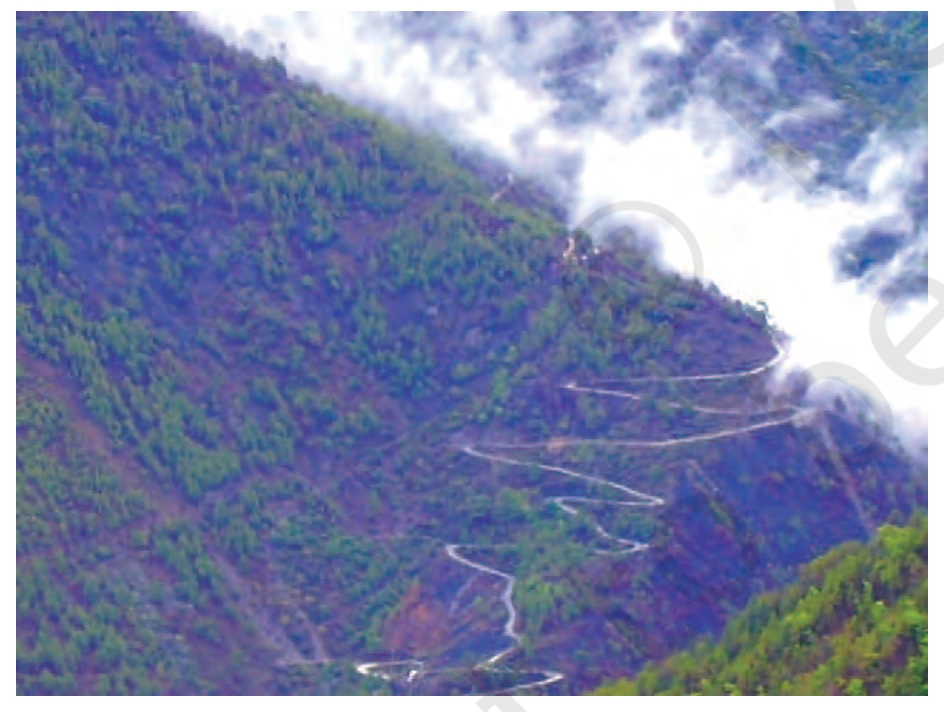
चित्र 7.5 (आधिकारिक NCERT हिंदी पाठ्यपुस्तक अध्याय 7): सीमांत सड़क (Border Road) - BRO द्वारा निर्मित।
🔍 चित्र का विस्तृत विवरण & भौगोलिक संदर्भ:
• क्या दर्शाता है: 1960 में स्थापित सीमा सड़क संगठन (BRO) द्वारा उत्तर व उत्तर-पूर्वी सीमावर्ती इलाकों में निर्मित सामरिक सड़क।
• भौगोलिक महत्व: देश की सीमाओं की रक्षा करने वाले सैनिकों की रसद पहुँचाने हेतु अतिमहत्वपूर्ण।
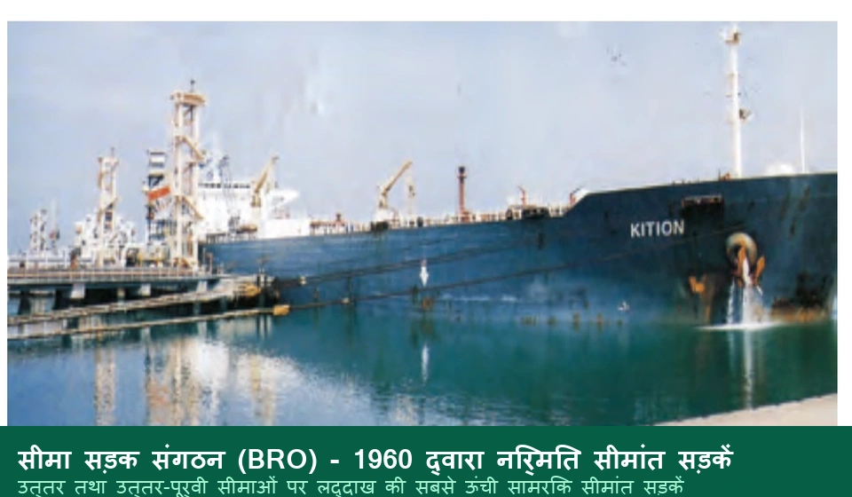
चित्र 10 (विशेष विषय चित्र): सीमा सड़क संगठन (BRO) द्वारा निर्मित हिमाच्छादित पहाड़ी सीमांत सड़क।
🔍 चित्र का विस्तृत विवरण & भौगोलिक संदर्भ:
• क्या दर्शाता है: लद्दाख व अरुणाचल के उच्च पर्वतीय दर्रों में बर्फ हटाकर बनाई गई सामरिक सड़क।
• भौगोलिक महत्व: सामरिक सुरक्षा तथा सीमावर्ती क्षेत्रों के आर्थिक विकास में अहम भूमिका।
भाग 2: रेल परिवहन और पाइपलाइन (Railways & Pipelines)
भारतीय रेल देश का सबसे बड़ा सार्वजनिक उपक्रम (Public Sector Undertaking) है। यह वस्तुओं और यात्रियों के परिवहन का मुख्य साधन है। भारत में पहली रेलगाड़ी 1853 में बंबई से ठाणे (34 किमी) के बीच चली थी।
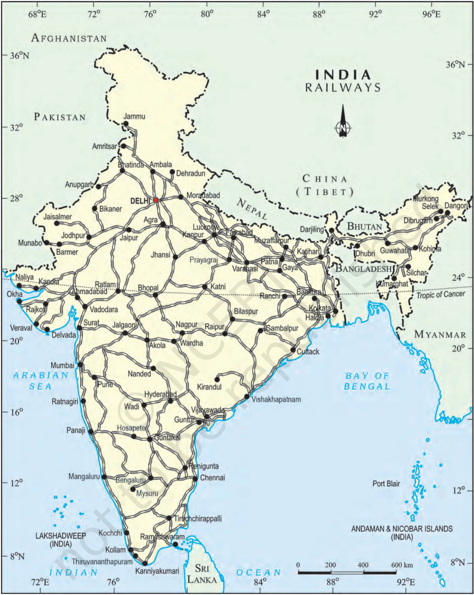
मानचित्र 7.2 (आधिकारिक NCERT हिंदी पाठ्यपुस्तक अध्याय 7): भारत का संपूर्ण रेलवे नेटवर्क।
🔍 चित्र का विस्तृत विवरण & भौगोलिक संदर्भ:
• क्या दर्शाता है: 16 रेल ज़ोनों में बंटा भारतीय रेलवे नेटवर्क।
• भौगोलिक महत्व: उत्तरी मैदानी भाग रेल परिवहन के विकास के लिए सबसे अनुकूल क्षेत्र है।
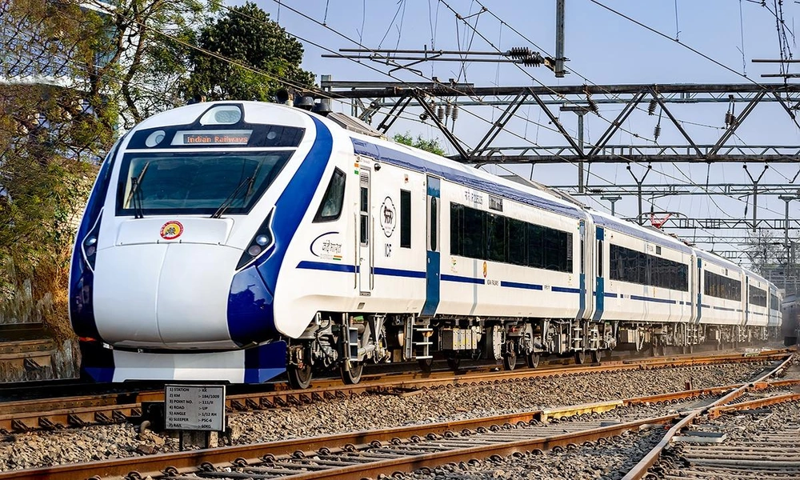
चित्र 2 (विशेष विषय चित्र): भारतीय रेल नेटवर्क और वंदे भारत एक्सप्रेस (Vande Bharat Express Train)।
🔍 चित्र का विस्तृत विवरण & भौगोलिक संदर्भ:
• क्या दर्शाता है: पटरियों पर तीव्र गति से दौड़ती आधुनिक वंदे भारत एक्सप्रेस ट्रेन।
• भौगोलिक महत्व: 1853 में बंबई से ठाणे (34 किमी) के बीच भारत की पहली रेल चली थी। आज रेल देश का सबसे बड़ा PSU उपक्रम है।
🚆 भारतीय रेल परिवहन की मुख्य विशेषताएं व चुनौतियां:
• पहाड़ी व तटीय क्षेत्र: प्रायद्वीपीय भारत और पश्चिमी घाट में रेल लाइनें पहाड़ियों, सुरंगों और दर्रों से होकर गुजरती हैं। पश्चिमी तट के साथ निर्मित **कोकण रेलवे (Konkan Railway)** ने आर्थिक विकास में योगदान दिया है, यद्यपि यहाँ भूस्खलन और पटरियों के धंसने जैसी समस्याएं आती हैं।
• रेलवे की मुख्य समस्याएं: बिना टिकट यात्रा करना, चोरी व रेल संपत्ति का नुकसान, और अकारण जंजीर (Chain Pulling) खींचकर ट्रेन रोकना।
2.2 पाइपलाइन परिवहन (Pipeline Transport):
पाइपलाइन भारत के परिवहन मानचित्र पर एक नया साधन है। पहले इसका उपयोग शहरों व उद्योगों में पानी पहुँचाने हेतु होता था, लेकिन आज इसका उपयोग **कच्चा तेल, पेट्रोलियम उत्पाद तथा प्राकृतिक गैस** को शोधनशालाओं (Refineries) और उर्वरक कारखानों तक पहुँचाने में किया जाता है।
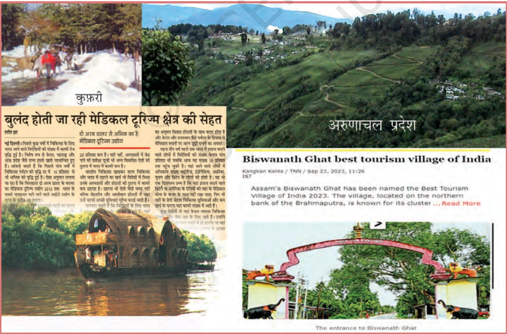
चित्र 6 (विशेष विषय चित्र): एच.वी.जे. (HVJ) हजीरा-विजयपुर-जगदीशपुर अंतरराज्यीय प्राकृतिक गैस पाइपलाइन मानचित्र (1,700 किमी)।
🔍 चित्र का विस्तृत विवरण & भौगोलिक संदर्भ:
• क्या दर्शाता है: गुजरात के हजीरा (Hazira) से मध्य प्रदेश के विजयपुर (Vijaypur) होते हुए उत्तर प्रदेश के जगदीशपुर (Jagdishpur) तक जाने वाली 1,700 किमी लंबी भारत की पहली अंतरराज्यीय प्राकृतिक गैस पाइपलाइन का आधिकारिक मानचित्र।
• भौगोलिक महत्व: यह पाइपलाइन मथुरा व बरौनी तेल शोधनशालाओं तथा बबराला, शाहजहाँपुर व दिल्ली-एनसीआर के उर्वरक कारखानों को प्राकृतिक गैस की निर्बाध आपूर्ति करती है।
🛢️ भारत के 3 प्रमुख पाइपलाइन नेटवर्क:
1. ऊपरी असम से कानपुर: ऊपरी असम के तेल क्षेत्रों से गुवाहाटी, बरौनी तथा प्रयागराज (इलाहाबाद) होते हुए कानपुर तक।
2. सलाया से जालंधर (गुजरात से पंजाब): गुजरात के सलाया से वीरमगाम, मथुरा, दिल्ली तथा सोनीपत होते हुए जालंधर तक।
3. एच.वी.जे. पाइपलाइन (HVJ Pipeline - 1700 किमी): गुजरात के **हजीरा (Hazira)** से मध्य प्रदेश के विजयपुर होते हुए उत्तर प्रदेश के **जगदीशपुर (Jagdishpur)** तक जाने वाली भारत की पहली अंतरराज्यीय गैस पाइपलाइन।
भाग 3: जल परिवहन और प्रमुख समुद्री बंदरगाह (Waterways & Sea Ports)
जल परिवहन भारत का सबसे प्राचीन, सबसे सस्ता और पर्यावरण के अनुकूल परिवहन साधन है। यह भारी और स्थूल वस्तुओं को ले जाने में अत्यधिक उपयुक्त है। भारत में 14,500 किमी लंबा आंतरिक जलमार्ग है।
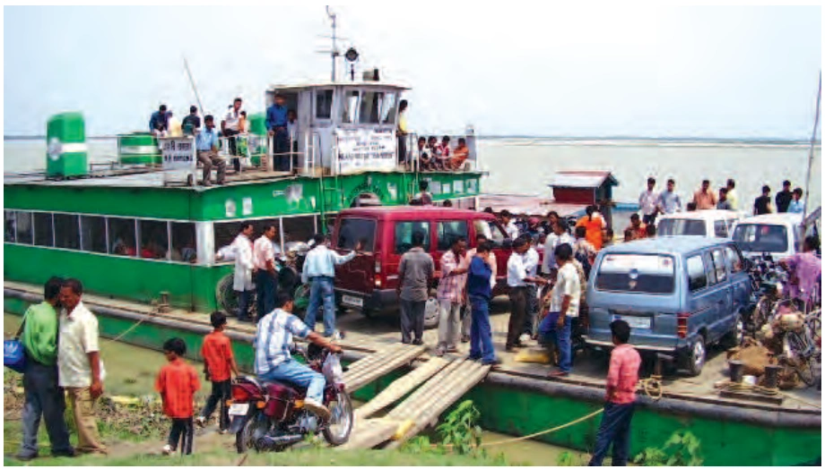
चित्र 7.6 (आधिकारिक NCERT हिंदी पाठ्यपुस्तक अध्याय 7): पूर्वोत्तर भारत में नौगम्य आंतरिक जलमार्ग (ब्रह्मपुत्र नदी)।
🔍 चित्र का विस्तृत विवरण & भौगोलिक संदर्भ:
• क्या दर्शाता है: असम और पूर्वोत्तर भारत में ब्रह्मपुत्र नदी में बजरे (Barges) द्वारा नौगम्य आंतरिक जल परिवहन।
• भौगोलिक महत्व: राष्ट्रीय जलमार्ग संख्या 2 (NW-2: सदिया से धुबरी, 891 किमी) का मुख्य दृश्य।
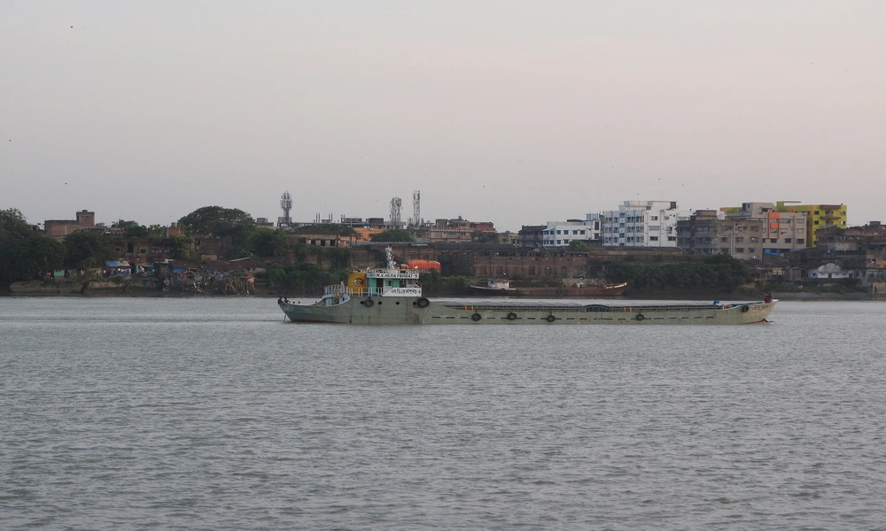
चित्र 3 (विशेष विषय चित्र): राष्ट्रीय जलमार्ग-1 (NW-1) - गंगा नदी पर मालवाहक बजरा (Ganga Waterway Freight Barge)।
🔍 चित्र का विस्तृत विवरण & भौगोलिक संदर्भ:
• क्या दर्शाता है: प्रयागराज से हलदिया के बीच (1,620 किमी) गंगा नदी में भारी माल ले जाता मालवाहक जहाज।
• भौगोलिक महत्व: जल परिवहन सबसे पर्यावरण-अनुकूल और ईंधन-दक्ष (Fuel-efficient) परिवहन साधन है।
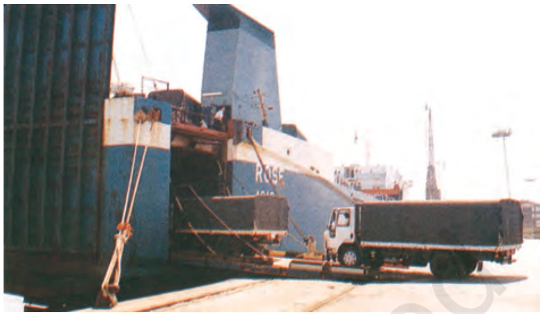
चित्र 7.7 (आधिकारिक NCERT हिंदी पाठ्यपुस्तक अध्याय 7): महासागरीय कच्चा तेल टैंकर पोत (Oil Tanker Ship)।
🔍 चित्र का विस्तृत विवरण & भौगोलिक संदर्भ:
• क्या दर्शाता है: समुद्र में तैरता विशालकाय कच्चा तेल टैंकर जहाज।
• भौगोलिक महत्व: भारत का 95% विदेशी व्यापार समुद्री जलमार्गों द्वारा ही संपन्न होता है।
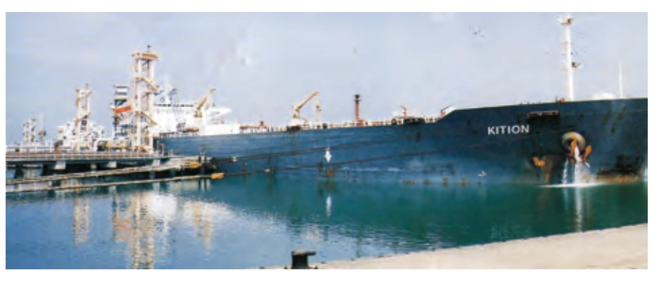
चित्र 7.8 (आधिकारिक NCERT हिंदी पाठ्यपुस्तक अध्याय 7): बंदरगाह पर मालवाहक कंटेनर की लोडिंग।
🔍 चित्र का विस्तृत विवरण & भौगोलिक संदर्भ:
• क्या दर्शाता है: अत्याधुनिक बंदरगाह पर स्वचालित क्रेन द्वारा मालवाहक जहाजों पर कंटेनरों की लोडिंग।
• भौगोलिक महत्व: अंतर्राष्ट्रीय व्यापार में माल लादने और उतारने के समय व लागत को घटाने में कंटेनर व्यवस्था का योगदान।
3.1 भारत के 5 घोषित राष्ट्रीय जलमार्ग (National Waterways):
NW-1: गंगा नदी - प्रयागराज से हलदिया के बीच (1,620 किमी) [सबसे लंबा जलमार्ग]।
NW-2: ब्रह्मपुत्र नदी - सदिया से धुबरी के बीच (891 किमी)।
NW-3: केरल में पश्चिम तटीय नहर - कोट्टापुरम से कोल्लाम तक (205 किमी)।
NW-4: गोदावरी और कृष्णा नदी का खिंचाव - काकीनाडा से पुदुचेरी तक (1,078 किमी)।
NW-5: ब्राह्मणी नदी तथा मातई नदी का खिंचाव - तालचर से धमरा तक (588 किमी)।
3.2 भारत के प्रमुख समुद्री बंदरगाह (Major Sea Ports):
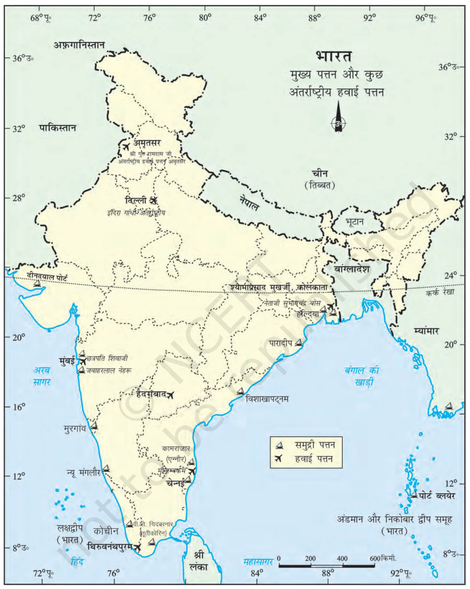
मानचित्र 7.3 (आधिकारिक NCERT हिंदी पाठ्यपुस्तक अध्याय 7): भारत के प्रमुख समुद्री बंदरगाह और अंतरराष्ट्रीय हवाई अड्डे।
🔍 चित्र का विस्तृत विवरण & भौगोलिक संदर्भ:
• क्या दर्शाता है: भारत की 7,516.6 किमी लंबी तटरेखा पर स्थित 12 प्रमुख बंदरगाह और 6 प्रमुख अंतरराष्ट्रीय हवाई अड्डे।
• भौगोलिक महत्व: कांडला, मुंबई, मार्मागॉ, न्यू मंगलोर, कोच्चि, तुतिकोरिन, चेन्नई, विशाखापट्टनम, पारादीप तथा हलदिया बंदरगाह भारत के वैश्विक व्यापार के प्रवेश द्वार हैं।
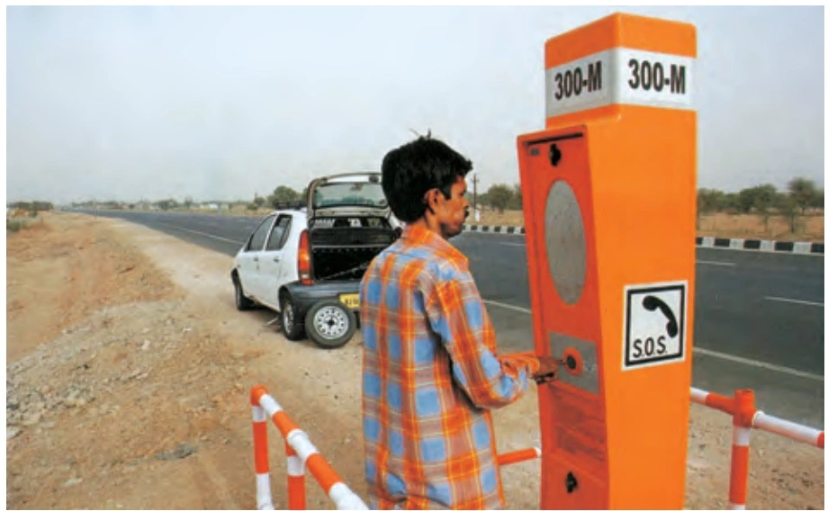
चित्र 4 (विशेष विषय चित्र): भारत के प्रमुख समुद्री बंदरगाह - बंबई व कांडला पोर्ट पर क्रेन द्वारा कंटेनर लोडिंग।
🔍 चित्र का विस्तृत विवरण & भौगोलिक संदर्भ:
• क्या दर्शाता है: विशालकाय अंतरराष्ट्रीय मालवाहक जहाजों से कंटेनर लादते बंदरगाह का व्यस्त दृश्य।
• भौगोलिक महत्व: 1947 के विभाजन के बाद कराची पोर्ट की कमी पूरा करने हेतु कांडला पहला ज्वारीय बंदरगाह बना।
बंदरगाह का नाम
राज्य / तट
मुख्य विशेषता एवं महत्व
1. कांडला (Kandla / दीनदयाल)
गुजरात (पश्चिम तट)
स्वतंत्रता के बाद विकसित पहला बंदरगाह (कराची पोर्ट के पाकिस्तान चले जाने की क्षतिपूर्ति हेतु)। ज्वारीय बंदरगाह (Tidal Port)।
2. मुंबई (Mumbai Port)
महाराष्ट्र (पश्चिम तट)
भारत का सबसे बड़ा, विशाल और प्राकृतिक पोताश्रय।
3. जवाहरलाल नेहरू (JNPT)
महाराष्ट्र (पश्चिम तट)
मुंबई बंदरगाह के भीड़-भाड़ को कम करने के लिए विकसित किया गया अत्याधुनिक नोड।
4. मार्मागॉ (Marmagao)
गोवा (पश्चिम तट)
भारत का प्रमुख लोह अयस्क निर्यातक बंदरगाह (देश के कुल लोह निर्यात का 50% यही से)।
5. न्यू मंगलोर (New Mangalore)
कर्नाटक (पश्चिम तट)
कुद्रेमुख की खानों से निकले लोह अयस्क के निर्यात हेतु प्रसिद्ध।
6. कोच्चि (Kochi)
केरल (दक्षिण-पश्चिम तट)
एक प्राकृतिक लाकून के मुहाने पर स्थित सुदूर दक्षिण-पश्चिम बंदरगाह।
7. तुतिकोरिन (Tuticorin)
तमिलनाडु (दक्षिण-पूर्व तट)
सुदूर दक्षिण-पूर्व का प्राकृतिक बंदरगाह। श्रीलंका और मालदीव व्यापार हेतु महत्वपूर्ण।
8. चेन्नई (Chennai Port)
तमिलनाडु (पूर्वी तट)
भारत का दूसरा सबसे पुराना **कृत्रिम बंदरगाह (Artificial Port)**।
9. विशाखापट्टनम (Visakhapatnam)
आंध्र प्रदेश (पूर्वी तट)
भारत का सबसे गहरा और सुरक्षित **स्थल-रुद्ध (Landlocked)** बंदरगाह। लोह अयस्क निर्यात हेतु प्रसिद्ध।
10. पारादीप (Paradip)
ओडिशा (पूर्वी तट)
विशेष रूप से ओडिशा के लोह अयस्क के निर्यात हेतु समर्पित।
11. कोलकाता व हलदिया (Kolkata-Haldia)
पश्चिम बंगाल (पूर्वी तट)
कोलकाता एक **नदीय बंदरगाह (Riverine Port)** है जो हुगली नदी पर है। हलदिया को इसके सहायक पोर्ट के रूप में विकसित किया गया।
भाग 4: वायु परिवहन और संचार सेवाएं (Airways & Communication)
वायु परिवहन आज का सबसे तीव्रतम, आरामदायक और प्रतिष्ठित परिवहन साधन है। यह अति दुर्गम स्थानों जैसे ऊंचे पर्वतों, घने जंगलों और लंबे समुद्री रास्तों को पार करने का सबसे सुलभ रास्ता है।
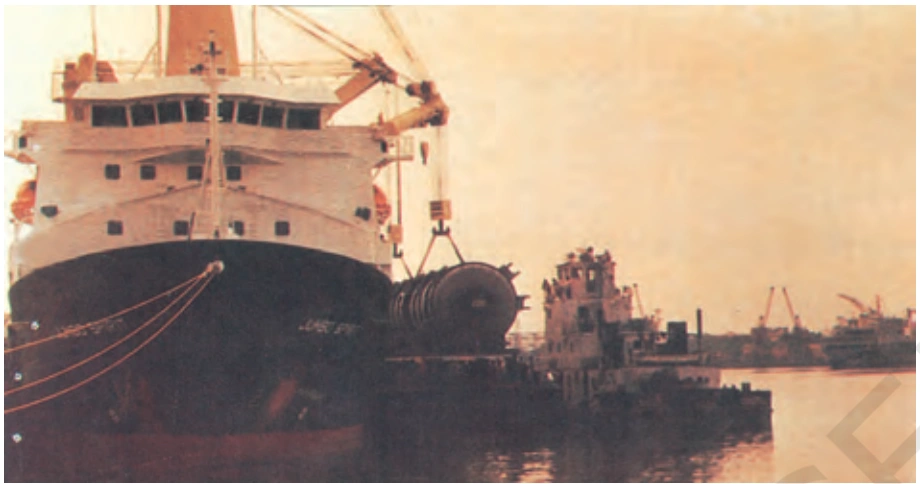
चित्र 7.9 (आधिकारिक NCERT हिंदी पाठ्यपुस्तक अध्याय 7): पवन हंस हेलीकॉप्टर (Pawan Hans Helicopter)।
🔍 चित्र का विस्तृत विवरण & भौगोलिक संदर्भ:
• क्या दर्शाता है: 'पवन हंस लिमिटेड' का हेलीकॉप्टर जो ओ.एन.जी.सी. और उत्तर-पूर्वी दुर्गम राज्यों को हेलीकॉप्टर सेवाएं देता है।
• भौगोलिक महत्व: प्राकृतिक आपदाओं (बाढ़, भूस्खलन) के समय राहत कार्य का एकमात्र साधन।
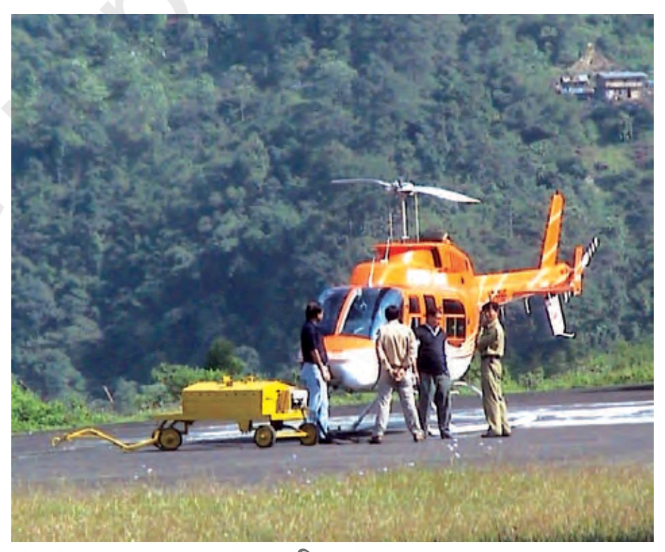
चित्र 7.10 (आधिकारिक NCERT हिंदी पाठ्यपुस्तक अध्याय 7): राष्ट्रीय राजमार्ग-48 पर आपातकालीन कॉल बॉक्स (Emergency Call Box on NH-48)।
🔍 चित्र का विस्तृत विवरण & भौगोलिक संदर्भ:
• क्या दर्शाता है: राष्ट्रीय राजमार्ग (NH-48) पर स्थापित स्वचालित SOS आपातकालीन कॉल बॉक्स।
• भौगोलिक महत्व: राजमार्ग पर दुर्घटना या वाहन खराबी के समय यात्री सीधे हाईवे नियंत्रण कक्ष से संपर्क करके तुरंत चिकित्सा व क्रेन सहायता प्राप्त कर सकते हैं।
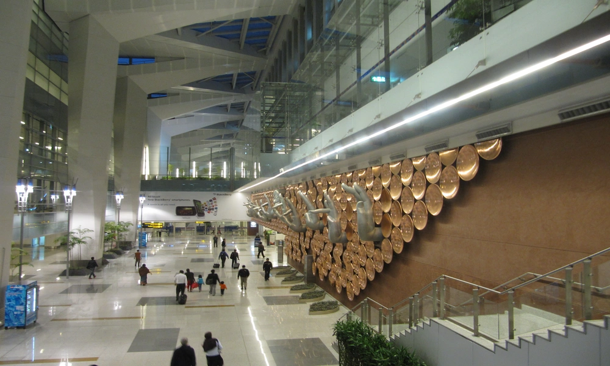
चित्र 7.11 (आधिकारिक NCERT हिंदी पाठ्यपुस्तक अध्याय 7): आधुनिक अंतरराष्ट्रीय हवाई अड्डा टर्मिनल (IGI Airport New Delhi)।
🔍 चित्र का विस्तृत विवरण & भौगोलिक संदर्भ:
• क्या दर्शाता है: नई दिल्ली के इंदिरा गांधी अंतरराष्ट्रीय हवाई अड्डे (IGI) का भव्य टर्मिनल।
• भौगोलिक महत्व: एयर इंडिया अंतरराष्ट्रीय स्तर पर यात्री व कार्गो सेवाएं प्रदान करती है।
4.1 भारत के 6 प्रमुख अंतरराष्ट्रीय हवाई अड्डे:
1. राजा सांसी (अमृतसर): श्री गुरु रामदास जी अंतरराष्ट्रीय हवाई अड्डा।
2. इंदिरा गांधी (नई दिल्ली): IGI अंतरराष्ट्रीय हवाई अड्डा।
3. छत्रपति शिवाजी महाराज (मुंबई): मुंबई अंतरराष्ट्रीय हवाई अड्डा।
4. मीनामबाक्कम (चेन्नई): चेन्नई अंतरराष्ट्रीय हवाई अड्डा।
5. नेताजी सुभाष चंद्र बोस (कोलकाता): दमदम अंतरराष्ट्रीय हवाई अड्डा।
6. राजीव गांधी (हैदराबाद): हैदराबाद अंतरराष्ट्रीय हवाई अड्डा।
4.2 संचार सेवाएं (Communication Services):
📡 3D लाइव सिम्युलेटर (Live Orbit Simulator): इंसैट (INSAT) उपग्रह का पृथ्वी की कक्षा में परिक्रमण
चित्र 7.12 (आधिकारिक NCERT हिंदी पाठ्यपुस्तक अध्याय 7): इंसैट (INSAT) उपग्रह संचार और पृथ्वी की कक्षा में चक्कर काटता उपग्रह (INSAT Satellite Orbiting Earth)।
🔍 सिम्युलेटर एवं चित्र का विस्तृत विवरण & भौगोलिक संदर्भ:
• क्या दर्शाता है: अंतरिक्ष में पृथ्वी की कक्षा में 360° निरंतर चक्र लगाता भारतीय इंसैट (INSAT) संचार उपग्रह जो भारत पर सिग्नेचर रेडियो बीम (Radio Signals) भेजता है।
• भौगोलिक महत्व: उपग्रह संचार ने देशव्यापी दूरदर्शन, आकाशवाणी, दूरसंचार, मोबाइल नेटवर्क तथा चक्रवात/मौसम चेतावनियों को पूरे भारत से जोड़ दिया है।
चित्र 7 (विशेष विषय चित्र): इसरो (ISRO) का इंसैट (INSAT) उपग्रह संचार और अंतरिक्ष नेटवर्क।
🔍 चित्र का विस्तृत विवरण & भौगोलिक संदर्भ:
• क्या दर्शाता है: अंतरिक्ष में पृथ्वी की कक्षा में स्थापित भारतीय संचार उपग्रह।
• भौगोलिक महत्व: उपग्रह तकनीक ने टीवी प्रसारण, मोबाइल कनेक्टिविटी व आपदा प्रबंधन को सुलभ बनाया।
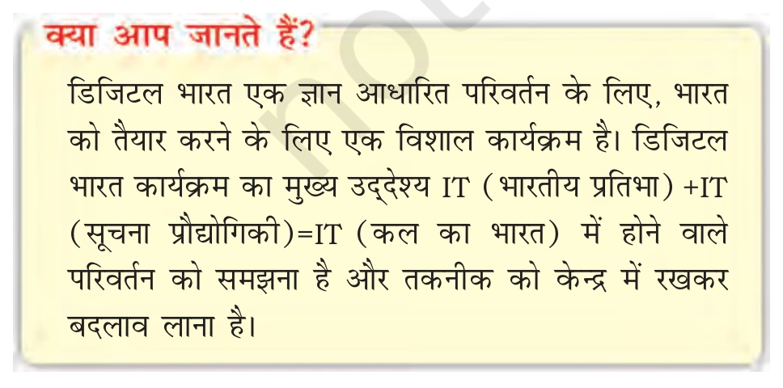
चित्र 7.13 (आधिकारिक NCERT हिंदी पाठ्यपुस्तक अध्याय 7): दैनिक समाचार पत्रों की विशाल प्रिंटिंग प्रेस।
🔍 चित्र का विस्तृत विवरण & भौगोलिक संदर्भ:
• क्या दर्शाता है: 100 से अधिक भाषाओं और बोलियों में छपने वाले भारतीय समाचार पत्र।
• भौगोलिक महत्व: भारत में सबसे अधिक समाचार पत्र **हिंदी भाषा** में छपते हैं।
📬 भारतीय डाक नेटवर्क की विशेषताएं:
• पहला दर्जा डाक (First Class Mail): कार्ड और लिफाफे जिन्हें हवाई व स्थल मार्ग से तेजी से पहुँचाया जाता है।
• दूसरा दर्जा डाक (Second Class Mail): किताब के पैकेट, पंजीकृत पत्र पत्रिकायें जो धरातलीय व जल मार्ग से भेजी जाती हैं।
• छः डाक चैनल (6 Mail Channels): बड़े शहरों में डाक की तीव्र डिलीवरी के लिए 6 चैनल बनाए गए हैं - **राजधानी चैनल, मेट्रो चैनल, ग्रीन चैनल, बिजनेस चैनल, बल्क मेल चैनल तथा पीरियोडिकल चैनल**।
भाग 5: अंतरराष्ट्रीय व्यापार और पर्यटन (Trade & Tourism)
राज्यों और देशों के बीच माल का विनिमय **व्यापार (Trade)** कहलाता है। दो देशों के बीच होने वाला व्यापार **'अंतरराष्ट्रीय व्यापार' (International Trade)** कहलाता है। इसे किसी भी देश का **'आर्थिक बैरोमीटर' (Economic Barometer)** माना जाता है।
⚖️ व्यापार संतुलन (Balance of Trade):
• अनुकूल व्यापार संतुलन (Favourable Balance of Trade): यदि देश के निर्यात (Exports) का मूल्य, आयात (Imports) के मूल्य से अधिक हो। यह आर्थिक समृद्धि का प्रतीक है।
• प्रतिकूल व्यापार संतुलन (Unfavourable Balance of Trade): यदि देश का आयात (Imports) का मूल्य, उसके निर्यात के मूल्य से अधिक हो।
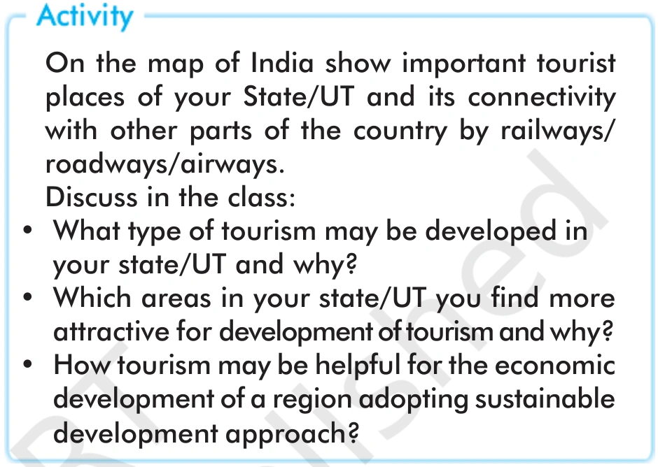
चित्र 7.14 (आधिकारिक NCERT हिंदी पाठ्यपुस्तक अध्याय 7): भारत के ऐतिहासिक स्मारकों का भ्रमण करते विदेशी पर्यटक।
🔍 चित्र का विस्तृत विवरण & भौगोलिक संदर्भ:
• क्या दर्शाता है: ताज महल और भारत के ऐतिहासिक स्मारकों का अवलोकन करते विदेशी पर्यटक।
• भौगोलिक महत्व: पर्यटन भारत का एक अदृश्य निर्यात है जो प्रतिवर्ष अरबों रुपये की विदेशी मुद्रा अर्जित करता है।
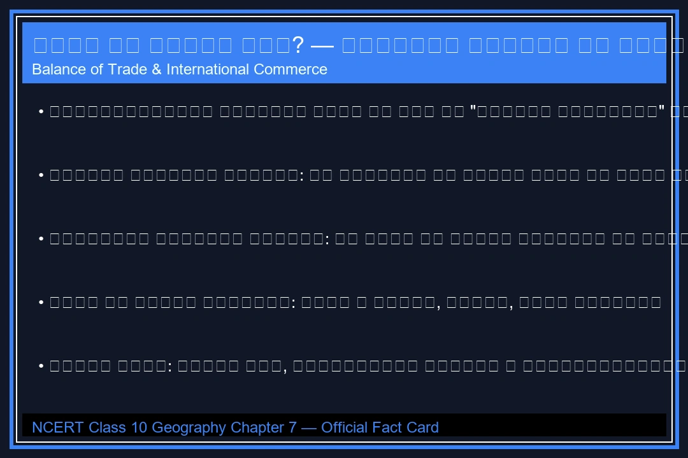
चित्र 8 (विशेष विषय चित्र): भारत का अंतरराष्ट्रीय व्यापार और मालवाहक पोत (International Trade Vessel)।
🔍 चित्र का विस्तृत विवरण & भौगोलिक संदर्भ:
• क्या दर्शाता है: दो देशों के बीच आयात-निर्यात माल ले जाता अंतरराष्ट्रीय व्यापारी जहाज।
• भौगोलिक महत्व: अंतरराष्ट्रीय व्यापार देश का 'आर्थिक बैरोमीटर' है।
चित्र 7.15 (आधिकारिक NCERT हिंदी पाठ्यपुस्तक अध्याय 7): भारतीय हस्तकला, कालीन व सांस्कृतिक वस्तुएं।
🔍 चित्र का विस्तृत विवरण & भौगोलिक संदर्भ:
• क्या दर्शाता है: भारतीय ग्रामीण कारीगरों द्वारा निर्मित उत्कृष्ट हस्तकला व कालीन, जिनका विदेशों में भारी निर्यात होता है।
• भौगोलिक महत्व: पर्यटन उद्योग 1.5 करोड़ (150 लाख) से अधिक लोगों को प्रत्यक्ष रोजगार प्रदान करता है।
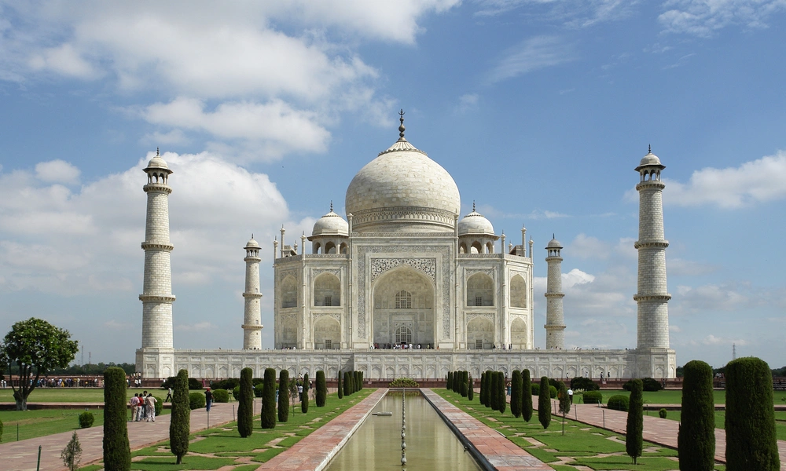
चित्र 9 (विशेष विषय चित्र): पर्यटन एक व्यापार के रूप में (Tourism as a Trade) - हवा महल (जयपुर, राजस्थान) का भ्रमण करते विदेशी पर्यटक।
🔍 चित्र का विस्तृत विवरण & भौगोलिक संदर्भ:
• क्या दर्शाता है: राजस्थान की सांस्कृतिक धरोहर हवा महल (जयपुर) का अवलोकन करते अंतरराष्ट्रीय विदेशी व देशी पर्यटक।
• भौगोलिक महत्व: पर्यटन भारत में एक व्यापार (अदृश्य निर्यात) की भाँति है, जो 150 लाख से अधिक लोगों को रोजगार, स्थानीय हस्तशिल्प को बढ़ावा तथा विदेशी मुद्रा अर्जित करता है।
🧳 पर्यटन एक व्यापार के रूप में (Tourism as a Trade):
1. विदेशी मुद्रा अर्जन: विदेशी पर्यटक भारत आकर ठहरने, परिवहन, हस्तकला खरीदने और भोजन पर भारी धनराशि खर्च करते हैं।
2. राष्ट्रीय एकीकरण: पर्यटन विभिन्न राज्यों के नागरिकों को आपस में जोड़ता है और सांस्कृतिक सांस्कृतिक विविधता का सम्मान जगाता है।
3. विभिन्न प्रकार का पर्यटन: भारत में **विरासत पर्यटन (Heritage Tourism), पारिस्थितिक पर्यटन (Ecoworship/Ecotourism), रोमांचक पर्यटन (Adventure Tourism), सांस्कृतिक पर्यटन (Cultural Tourism), चिकित्सा पर्यटन (Medical Tourism) तथा व्यापारिक पर्यटन (Business Tourism)** तेजी से बढ़ रहा है।
भाग 6: हमने क्या सीखा? (पाठ का सार - Key Takeaways & Summary)
📌 अध्याय 7 का संपूर्ण सार एवं मुख्य बिंदु (10 महत्वपूर्ण निष्कर्ष):
1. राष्ट्रीय अर्थव्यवस्था की जीवन रेखाएं: परिवहन, संचार और व्यापार को देश की जीवन रेखाएं कहा जाता है क्योंकि ये उत्पादन केंद्रों को उपभोग केंद्रों से जोड़ती हैं और राष्ट्रीय एकीकरण लाती हैं।
2. सड़क परिवहन की श्रेष्ठता: भारत में 62.16 लाख किमी सड़क नेटवर्क है। सड़कें उबड़-खाबड़ पहाड़ियों में भी बनाई जा सकती हैं और यह 'द्वार-से-द्वार' (Door-to-Door) सेवा प्रदान करती हैं।
3. स्वर्णिम चतुर्भुज महामार्ग (Golden Quadrilateral): NHAI द्वारा संचालित 6-लेन का सुपर हाईवे जो दिल्ली, मुंबई, चेन्नई और कोलकाता को जोड़ता है। उत्तर-दक्षिण (श्रीनगर-कन्याकुमारी) व पूर्व-पश्चिम (सिलचर-पोरबंदर) इसके मुख्य गलियारे हैं।
4. सीमांत सड़कें (BRO): 1960 में गठित 'सीमा सड़क संगठन' देश की उत्तरी व उत्तर-पूर्वी सीमाओं पर सामरिक महत्व की सड़कों का निर्माण व रखरखाव करता है।
5. भारतीय रेल व 1853 की पहली ट्रेन: 1853 में बंबई से ठाणे (34 किमी) के बीच पहली रेल चली। भारतीय रेल 16 ज़ोन में बंटी है और देश का सबसे बड़ा सार्वजनिक उपक्रम है।
6. एच.वी.जे. पाइपलाइन (HVJ Pipeline): हजीरा (गुजरात) से विजयपुर (म.प्र.) होते हुए जगदीशपुर (यू.पी.) तक जाने वाली 1700 किमी लंबी प्राकृतिक गैस पाइपलाइन।
7. राष्ट्रीय जलमार्ग (NW-1 से NW-5): गंगा नदी (प्रयागराज से हलदिया - 1620 किमी) भारत का पहला और सबसे लंबा राष्ट्रीय जलमार्ग (NW-1) है। जल परिवहन सबसे सस्ता साधन है।
8. प्रमुख बंदरगाह (कांडला, मार्मागॉ, विशाखापट्टनम): स्वतंत्रता के बाद बना पहला ज्वारीय बंदरगाह **कांडला (दीनदयाल)** है। **मार्मागॉ (गोवा)** से 50% लोह अयस्क निर्यात होता है। **विशाखापट्टनम** सबसे गहरा स्थल-रुद्ध बंदरगाह है।
9. पवन हंस हेलीकॉप्टर व अंतरराष्ट्रीय हवाई अड्डे: 'पवन हंस' दुर्गम पर्वतीय क्षेत्रों और ONGC को हेलीकॉप्टर सेवा देता है। अमृतसर (राजा सांसी), दिल्ली (IGI), मुंबई (छत्रपति शिवाजी), चेन्नई (मीनामबाक्कम), कोलकाता (सुभाष चंद्र बोस) मुख्य अंतरराष्ट्रीय हवाई अड्डे हैं।
10. व्यापार संतुलन व पर्यटन: यदि निर्यात का मूल्य आयात से अधिक हो तो उसे 'अनुकूल व्यापार संतुलन' कहते हैं। पर्यटन एक 'अदृश्य व्यापार' है जो 1.5 करोड़ लोगों को रोजगार देता है और भारी विदेशी मुद्रा अर्जित करता है।